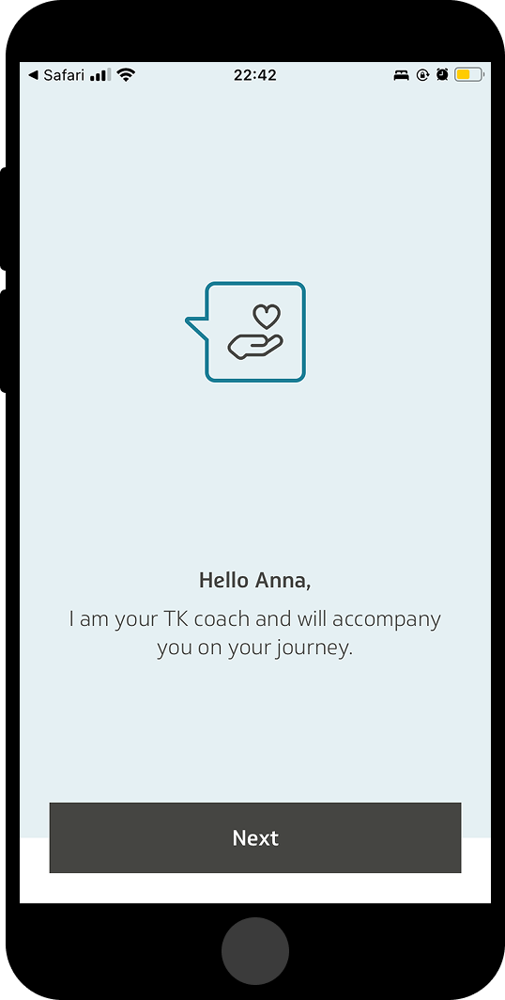
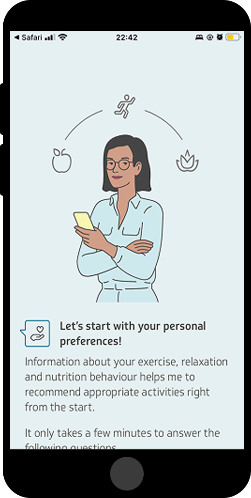
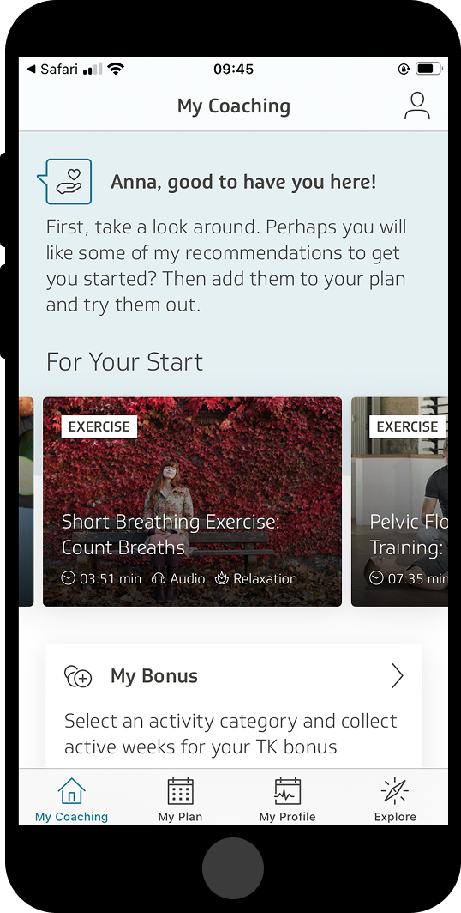
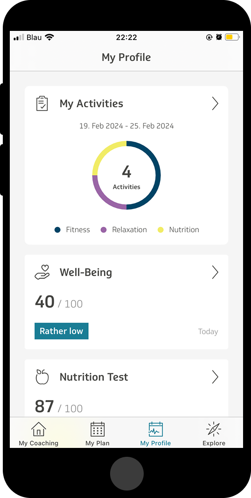
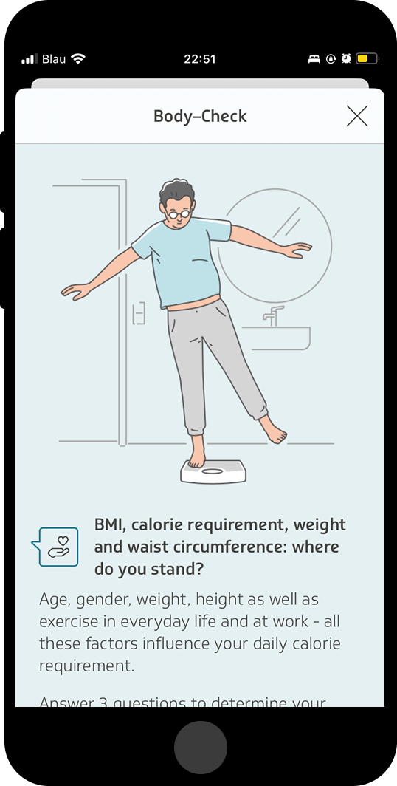
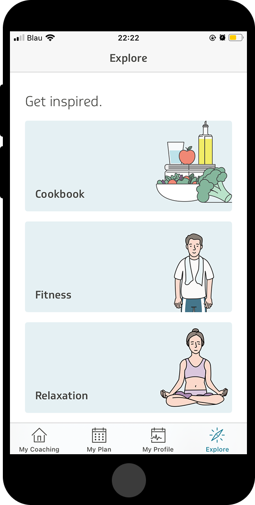
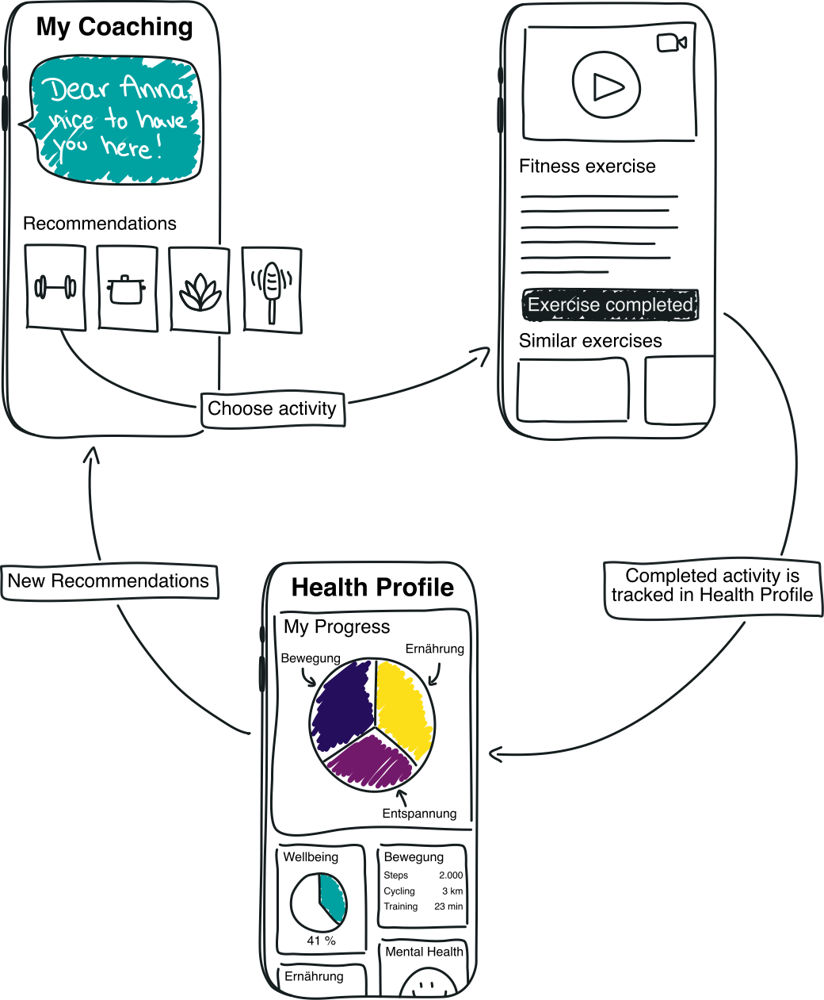
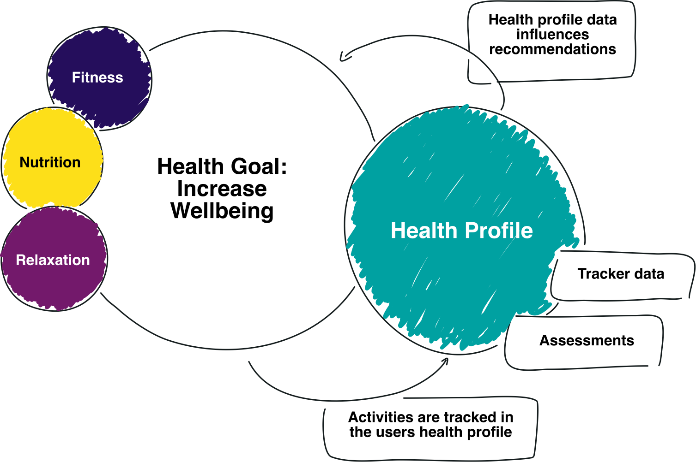

Engagement by Design
How I Built a 4.5 Star Coaching App
Results
- Implemented Multimodal Health Coaching with Fitness, Nutrition and Relaxation
- Reached a 4.5 Star rating in Apple and Android App-Store
- Increased retention from 20 % to 35 % within 3 Month
- Scored AttrakDif above 2 in every user test, reflecting high user satisfaction and perceived usability.
- Launched MVP within 1 year, followed by 4 major app releases within four years
- Reached 100.000 user within 3 years






Situation
Client: Germany’s largest health insurance
Germany’s largest health insurance provider, wanted to transform its long-standing web-based health coaching program into a mobile app. The goal was to make health coaching more accessible and engaging by integrating areas such as exercise, relaxation, and nutrition into a single, data-driven experience.
The challenge was to define a clear product vision that aligned the app with the existing platform while ensuring a consistent user experience that would motivate users to improve their well-being.
Task
Position: Lead UX Designer
Focus: Product Strategy, UX Concept, Prototyping, User Testing
Develop a user-centered product concept and UX strategy for the TK-Coach App, from ideation to implementation, across multiple releases. The app needed to translate medical expertise into actionable, personalized recommendations while remaining intuitive, visually consistent, and emotionally engaging.
Actions
- Defined the product vision in close collaboration with the client through interactive workshops. Applied Lightning Demos to help stakeholders visualize their ideas and consolidate them into three vision scenarios — resulting in the selected concept: a multimodal app that enhances well-being through fitness, relaxation, and nutrition.
- Developed the overall UX concept based on user data, competitive analysis, and co-creation sessions with the client. Used Card Sorting to identify relevant content and structure.


- Created Experience Journey Maps and Storyboards to visualize user scenarios and refine features collaboratively with product owners and healthcare specialists.
- Prioritized ideas using a Desirability–Feasibility–Viability diagrams to align user needs with business goals.
- Validated the concept through rapid prototyping and iterative user testing. Early prototypes confirmed usability and revealed opportunities for improvement in information architecture and content flow.
- Designed detailed wireframes and coordinated closely with the UI designer to build a consistent design system in Figma, ensuring scalability across releases.
- Maintained transparency and collaboration by introducing weekly design reviews with the client, enabling quick feedback loops and timely milestone delivery.
- Supported product owners and developers throughout implementation by providing detailed documentation, clarifying requirements, and adapting designs based on technical constraints.
Key learnings
- Listening to all stakeholders and asking open questions is essential to uncover real goals and challenges.
- Encouraging stakeholders to visualize ideas is often more productive than open discussion, leading to better alignment and creativity.
- Setting clear goals and KPIs ensures focus, measurable progress, and visible design impact.
- Continuous and transparent communication between all parties was a key success factor, preventing misunderstandings and reducing unnecessary iterations.